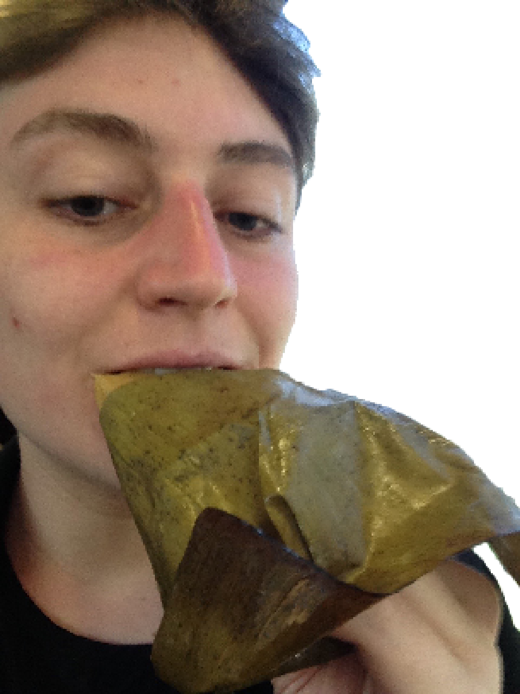

cassava suman
delicious leaf breakfast
- sweet cassava (yucca)
- coconut cream
- grated fresh coconut (you can get it frozen in market basket)
- sugar
- banana leaves

- string
- carefully peel the yuccas, and wash your hands+all the surfaces+yuccas to get rid of the cyanide from the skin. grate the yuccas into a bowl and squeeze out some of the juice
- add some coconut cream and a few tablespoons of sugar, and mix well
- cut the banana leaves into longish rectangles, about 6 inches long and 4 inches wide. put the mixture down the centre of the rectangle, then add a line of grated coconut in the middle. fold both ends, then both sides and tie with string
- place all the wraps in a steamer and steam for 45min or so. the yucca will become soft and gelatinous.